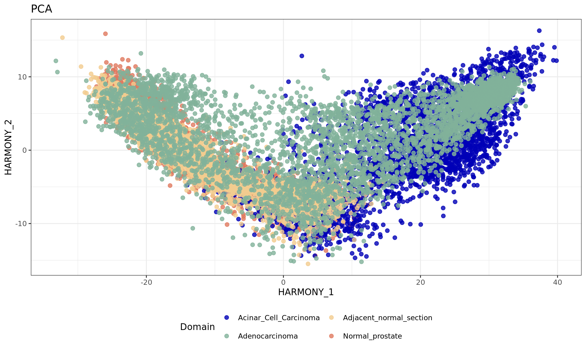
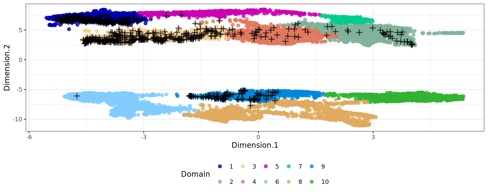
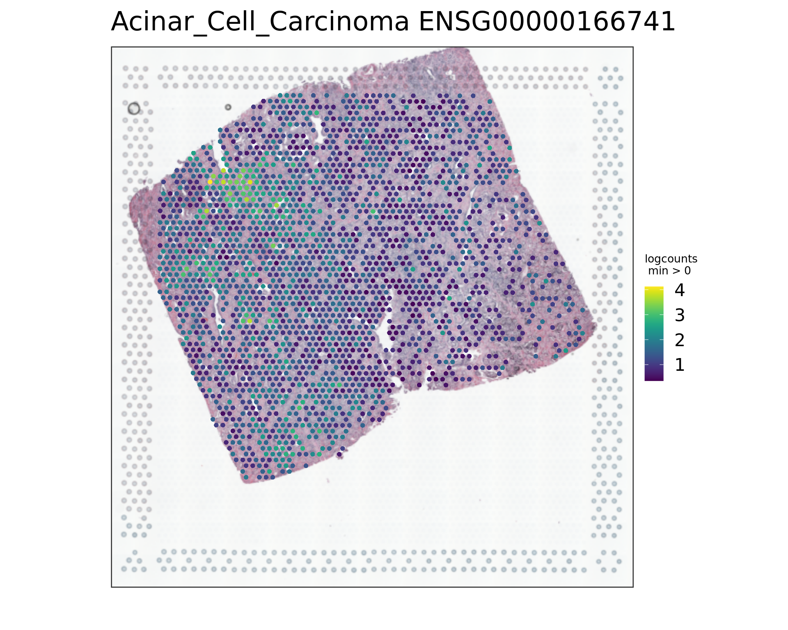

About
Last updated: 2024-09-14
Checks: 7 0
Knit directory: KODAMA-Analysis/
This reproducible R Markdown analysis was created with workflowr (version 1.7.1). The Checks tab describes the reproducibility checks that were applied when the results were created. The Past versions tab lists the development history.
Great! Since the R Markdown file has been committed to the Git repository, you know the exact version of the code that produced these results.
Great job! The global environment was empty. Objects defined in the global environment can affect the analysis in your R Markdown file in unknown ways. For reproduciblity it’s best to always run the code in an empty environment.
The command set.seed(20240618) was run prior to running
the code in the R Markdown file. Setting a seed ensures that any results
that rely on randomness, e.g. subsampling or permutations, are
reproducible.
Great job! Recording the operating system, R version, and package versions is critical for reproducibility.
Nice! There were no cached chunks for this analysis, so you can be confident that you successfully produced the results during this run.
Great job! Using relative paths to the files within your workflowr project makes it easier to run your code on other machines.
Great! You are using Git for version control. Tracking code development and connecting the code version to the results is critical for reproducibility.
The results in this page were generated with repository version edbb375. See the Past versions tab to see a history of the changes made to the R Markdown and HTML files.
Note that you need to be careful to ensure that all relevant files for
the analysis have been committed to Git prior to generating the results
(you can use wflow_publish or
wflow_git_commit). workflowr only checks the R Markdown
file, but you know if there are other scripts or data files that it
depends on. Below is the status of the Git repository when the results
were generated:
Ignored files:
Ignored: .RData
Ignored: .Rhistory
Untracked files:
Untracked: Elemina.RData
Untracked: data/spots_classification_ALL.csv
Untracked: data/trajectories.RData
Untracked: data/trajectories_VISIUMHD.RData
Untracked: elimina_table.RData
Untracked: output/DLFPC-All-2-3000-300-0.4.RData
Untracked: output/DLFPC-All.RData
Untracked: output/DLFPC-Br5292-2-3000-300-0.3.RData
Untracked: output/DLFPC-Br5292.RData
Untracked: output/DLFPC-Br5595-2-3000-300-0.3.RData
Untracked: output/DLFPC-Br5595.RData
Untracked: output/DLFPC-Br8100-2-3000-300-0.3.RData
Untracked: output/DLFPC-Br8100.RData
Untracked: output/MERFISH.RData
Untracked: output/Prostate.RData
Untracked: output/VisiumHD.RData
Untracked: output/VisiumHD2.RData
Untracked: output/VisiumHD3.RData
Untracked: output/image.RData
Unstaged changes:
Deleted: analysis/DLPFC-12.Rmd
Deleted: analysis/DLPFC-4.Rmd
Modified: analysis/DLPFC.Rmd
Modified: analysis/Giotto.Rmd
Deleted: analysis/STARmap.Rmd
Note that any generated files, e.g. HTML, png, CSS, etc., are not included in this status report because it is ok for generated content to have uncommitted changes.
These are the previous versions of the repository in which changes were
made to the R Markdown (analysis/Prostate.Rmd) and HTML
(docs/Prostate.html) files. If you’ve configured a remote
Git repository (see ?wflow_git_remote), click on the
hyperlinks in the table below to view the files as they were in that
past version.
| File | Version | Author | Date | Message |
|---|---|---|---|---|
| Rmd | edbb375 | Stefano Cacciatore | 2024-09-14 | Start my new project |
| html | 460bb2d | Stefano Cacciatore | 2024-09-04 | Build site. |
| Rmd | 3040393 | Stefano Cacciatore | 2024-09-04 | Start my new project |
| html | ac43fcf | Stefano Cacciatore | 2024-09-02 | Build site. |
| Rmd | be96835 | Stefano Cacciatore | 2024-09-02 | Start my new project |
| html | 46cbd5a | Stefano Cacciatore | 2024-09-02 | Build site. |
| Rmd | 9cc4b2b | Stefano Cacciatore | 2024-09-02 | Start my new project |
| html | 202bc0e | Stefano Cacciatore | 2024-09-02 | Build site. |
| Rmd | b9309f4 | Stefano Cacciatore | 2024-09-02 | Start my new project |
| html | b1a5ea0 | Stefano Cacciatore | 2024-08-26 | Build site. |
| Rmd | 22e2ac6 | Stefano Cacciatore | 2024-08-26 | Start my new project |
| html | d1192e9 | Stefano Cacciatore | 2024-08-12 | Build site. |
| html | 3374e66 | Stefano Cacciatore | 2024-08-06 | Build site. |
| html | 35ce733 | Stefano Cacciatore | 2024-08-03 | Build site. |
| html | 82fe167 | Stefano Cacciatore | 2024-07-24 | Build site. |
| html | 6f7daac | Stefano Cacciatore | 2024-07-19 | Build site. |
| Rmd | 3f7aad6 | Stefano Cacciatore | 2024-07-19 | Start my new project |
| Rmd | 75d2c78 | GitHub | 2024-07-15 | Update Prostate.Rmd |
| Rmd | 95c6aaf | GitHub | 2024-07-15 | Update Prostate.Rmd |
| html | 7be8f59 | tkcaccia | 2024-07-15 | updates |
| Rmd | f8ca54a | tkcaccia | 2024-07-14 | update |
| html | f8ca54a | tkcaccia | 2024-07-14 | update |
| Rmd | 39586a6 | GitHub | 2024-07-12 | Update Prostate.Rmd |
| html | 60a4b0d | GitHub | 2024-07-12 | Update Prostate.html |
| html | 6660a41 | GitHub | 2024-07-12 | Update Prostate.html |
| html | b9679c8 | GitHub | 2024-07-12 | Update Prostate.html |
| html | 9b0bdad | GitHub | 2024-07-12 | Update Prostate.html |
| html | 4c71aaa | GitHub | 2024-07-12 | Update Prostate.html |
| Rmd | 4a7b4ca | GitHub | 2024-07-12 | Update Prostate.Rmd |
| html | d652bc6 | GitHub | 2024-07-08 | Update Prostate.html |
| html | cac859c | GitHub | 2024-07-04 | Update Prostate.html |
| html | ee4ee17 | GitHub | 2024-06-19 | Add files via upload |
| Rmd | 615fc05 | GitHub | 2024-06-19 | Add files via upload |
Introduction
The data used in this analysis come from the Visium database, a reference resource for spatial transcriptomics data. This database provides detailed information on gene expression in various tissue contexts, offering high-resolution spatial data.
For this tutorial, we focus on different types of prostate tissues, including normal prostate, adenocarcinoma, acinar cell carcinoma, and adjacent normal sections. These data are crucial for understanding the variations in gene expression between healthy and cancerous tissues and for identifying potential diagnostic and therapeutic markers.
The data can be downloaded using the following script: Prostate_download.sh. This script facilitates access to the raw data, which will then be preprocessed and analyzed in the subsequent steps of our pipeline.
Preprocessing
This section details the preprocessing of spatial transcriptomics data, which is a crucial step for cleaning and preparing the data for further analysis.
Loading Libraries and Defining Tissue Types
library(SpatialExperiment)
library(scater)
library(nnSVG)
library(SPARK)
library(harmony)
library(scuttle)
library(BiocSingular)
library(spatialLIBD)
library(KODAMAextra)
opar <- par() # make a copy of current settings
tissues <- c("Normal_prostate",
"Acinar_Cell_Carcinoma",
"Adjacent_normal_section",
"Adenocarcinoma")
n.cores=16Begin by loading the necessary libraries for the analysis. Next, define the different types of prostate tissues to be studied: normal prostate, acinar cell carcinoma, adjacent normal sections, and adenocarcinoma.
Reading Visium Data
dir <- "../Prostate/"
address <- file.path(dir, tissues, "")
spe <- read10xVisium(address, tissues,
type = "sparse", data = "raw",
images = "lowres", load = FALSE)Visualization
par(mfrow = c(1, 4))
img=as.raster(getImg(spe, sample_id = "Normal_prostate" , image_id = NULL))
plot(img)
box(col="#77cc66",lwd=3)
mtext("Normal prostate")
img=as.raster(getImg(spe, sample_id = "Acinar_Cell_Carcinoma" , image_id = NULL))
plot(img)
box(col="#77cc66",lwd=3)
mtext("Acinar cell carcinoma")
img=as.raster(getImg(spe, sample_id = "Adenocarcinoma" , image_id = NULL))
plot(img)
box(col="#77cc66",lwd=3)
mtext("Adenocarcinoma")
img=as.raster(getImg(spe, sample_id = "Adjacent_normal_section" , image_id = NULL))
plot(img)
box(col="#77cc66",lwd=3)
mtext("Adjacent Normal section with IF")
Loading Pathology Data
To begin the pathology data analysis, load the corresponding pathology data for adenocarcinoma samples. Ensure to replace the file path with the correct location of your data.
patho <- read.csv("data/Pathology.csv")Loading Preprocessed Data
metaData <- SingleCellExperiment::colData(spe)
expr <- SingleCellExperiment::counts(spe)
sample_names <- unique(colData(spe)$sample_id)Load the preprocessed data and extract the metadata and gene expression counts.
Filtering Tissue Spots and Identifying Mitochondrial Genes
spe <- spe[, colData(spe)$in_tissue]
# Identify mitochondrial genes
is_mito <- grepl("(^MT-)|(^mt-)", rowData(spe)$gene_name)Filter the spots located in the tissue and identify mitochondrial genes, which are often used as quality indicators.
Calculating Quality Control (QC) Metrics per Spot
# Calculate per-spot QC metrics
spe <- addPerCellQC(spe, subsets = list(mito = is_mito))
# Select QC thresholds
qc_lib_size <- colData(spe)$sum < 500
qc_detected <- colData(spe)$detected < 250
qc_mito <- colData(spe)$subsets_mito_percent > 30
qc_cell_count <- colData(spe)$cell_count > 12
# Spots to discard
discard <- qc_lib_size | qc_detected | qc_mito | qc_cell_count
if (length(discard) > 0) {
table(discard)
colData(spe)$discard <- discard
# Filter low-quality spots
spe <- spe[, !colData(spe)$discard]
}
dim(spe)[1] 36945 13417Calculate several QC metrics per spot, such as library size, number of detected genes, percentage of mitochondrial genes, and cell count. Define thresholds for these metrics and filter out low-quality spots.
Filtering Genes
colnames(rowData(spe)) <- "gene_name"
spe <- filter_genes(
spe,
filter_genes_ncounts = 2, # Minimum counts
filter_genes_pcspots = 0.5, # Minimum percentage of spots
filter_mito = TRUE # Filter mitochondrial genes
)
dim(spe)[1] 12527 13417Filter genes based on the number of counts and the percentage of spots in which they are present. Mitochondrial genes are also filtered out.
Normalizing Counts
spe <- computeLibraryFactors(spe)
spe <- logNormCounts(spe)normalize the counts using library size factors and apply a logarithmic transformation to obtain data ready for more precise analysis.
This preprocessing process cleans and normalizes the spatial transcriptomics data, ensuring high-quality data ready for subsequent analyses.
Feature Selection with SPARK
After preprocessing the data, the next step involves feature selection using SPARK, which is crucial for identifying significant genes across different tissue samples.
multi_SPARKX.SpatialExperiment = function(object, ...) {
if (!is(object, "SpatialExperiment")) {
stop("object is not a spatialExperiment object")
}
data=as.matrix(t(logcounts(object)))
spatial=as.matrix(spatialCoords(object))
samples=as.factor(colData(object)$sample_id)
top=multi_SPARKX(data,spatial,samples)
return(top)
}
top=multi_SPARKX.SpatialExperiment(spe,n.cores=n.cores)Principal Component Analysis (PCA)
After feature selection, principal component analysis (PCA) is performed to explore the variance in the dataset and visualize sample relationships.
sample_id=colData(spe)$sample_id
library(ggplot2)
cols_tissue <- c("#0000b6cc", "#81b29acc", "#f2cc8fcc","#e07a5fcc")
# Run PCA with top selected genes
spe <- runPCA(spe, subset_row = top[1:3000], scale = TRUE)
# Run Harmony to adjust for batch effects
spe <- RunHarmony(spe, group.by.vars = "sample_id", lambda = NULL)
# Visualize PCA and Harmony results
df <- data.frame(reducedDim(spe,type = "PCA")[,1:2], tissue=as.factor(colData(spe)$sample_id))
ggplot(df, aes(PC1, PC2, color = tissue)) +labs(title="PCA") +
geom_point(size = 2) +
theme_bw() + theme(legend.position = "bottom")+
scale_color_manual("Domain", values = cols_tissue) +
guides(color = guide_legend(nrow = 2,
override.aes = list(size = 2)))
df <- data.frame(reducedDim(spe,type = "HARMONY")[,1:2], tissue=as.factor(colData(spe)$sample_id))
ggplot(df, aes(HARMONY_1, HARMONY_2, color = tissue)) +labs(title="PCA") +
geom_point(size = 2) +
theme_bw() + theme(legend.position = "bottom")+
scale_color_manual("Domain", values = cols_tissue) +
guides(color = guide_legend(nrow = 2,
override.aes = list(size = 2)))
pca=reducedDim(spe,type = "HARMONY")[,1:50]
samples=as.factor(colData(spe)$sample_id)
xy=as.matrix(spatialCoords(spe))
data=t(logcounts(spe))Processing Pathology Data
The processing involves creating row names and associating pathology information with the corresponding columns in the spe object.
rownames(patho) <- patho[,1]
pathology <- rep(NA, ncol(spe))
sel <- colData(spe)$sample_id == "Adenocarcinoma"
pathology[sel] <- patho[rownames(colData(spe))[sel], "Pathology"]
pathology[pathology == ""] <- NA
pathology <- factor(pathology, levels = c("Invasive carcinoma",
"Blood vessel",
"Fibro-muscular tissue",
"Fibrous tissue",
"Immune Cells",
"Nerve",
"Normal gland"))Visualization of Pathology Data
Assign specific colors to each pathology category and visualize the samples on a reduced dimension map (HARMONY), with each point colored according to its pathology category.
cols_pathology <- c("#0000ff", "#e41a1c", "#006400", "#000000", "#ffd700", "#00ff00", "#b2dfee")
df <- data.frame(reducedDim(spe,type = "HARMONY")[,1:2], tissue=pathology)
df=df[!is.na(pathology),]
ggplot(df, aes(HARMONY_1, HARMONY_2, color = tissue)) +labs(title="PCA") +
geom_point(size = 2) +
theme_bw() + theme(legend.position = "bottom")+
scale_color_manual("Domain", values = cols_pathology) +
guides(color = guide_legend(nrow = 2,
override.aes = list(size = 2)))
Running KODAMA for Analysis
The next step is running KODAMA, a method for dimensionality reduction and visualization.
spe <- RunKODAMAmatrix(spe,
reduction = "HARMONY",
FUN = "PLS",
landmarks = 100000,
splitting = 300,
f.par.pls = 50,
spatial.resolution = 0.2,
n.cores = n.cores,
aa_noise=3)Calculating Network
Calculating Network spatial
socket cluster with 16 nodes on host 'localhost'
================================================================================
Finished parallel computation
[1] "Calculation of dissimilarity matrix..."
================================================================================config <- umap.defaults
config$n_threads = n.cores
config$n_sgd_threads = "auto"
spe=RunKODAMAvisualization(spe,method="UMAP",config=config)
df <- data.frame(reducedDim(spe,type = "KODAMA")[,1:2], tissue=as.factor(colData(spe)$sample_id))
ggplot(df, aes(Dimension.1, Dimension.2, color = tissue)) +labs(title="PCA") +
geom_point(size = 2) +
theme_bw() + theme(legend.position = "bottom")+
scale_color_manual("Domain", values = cols_tissue) +
guides(color = guide_legend(nrow = 2,
override.aes = list(size = 2)))
df <- data.frame(reducedDim(spe,type = "KODAMA")[,1:2], tissue=pathology)
ggplot(df, aes(Dimension.1, Dimension.2, color = tissue)) +labs(title="PCA") +
geom_point(size = 2) +
theme_bw() + theme(legend.position = "bottom")+
scale_color_manual("Domain", values = cols_pathology) +
guides(color = guide_legend(nrow = 2,
override.aes = list(size = 2)))
Clustering

| Version | Author | Date |
|---|---|---|
| 46cbd5a | Stefano Cacciatore | 2024-09-02 |

| Version | Author | Date |
|---|---|---|
| 46cbd5a | Stefano Cacciatore | 2024-09-02 |
Trajectory
par(opar)
sel=colData(spe)$sample_id=="Acinar_Cell_Carcinoma"
spe_sub=spe[,sel]
image=as.raster(imgData(spe_sub)$data[[1]])
xy_sel=spatialCoords(spe_sub)
xy_sel=xy_sel*scaleFactors(spe_sub)
xy_sel[,2]=nrow(image)-xy_sel[,2]
plot(image)
points(xy_sel,cex=0.5,pch=20,col="#33333333")
data=as.matrix(t(logcounts(spe_sub)))
# nn1=new_trajectory (xy_sel,data = data)
# nn2=new_trajectory (xy_sel,data = data)
# nn3=new_trajectory (xy_sel,data = data)
load("data/trajectories.RData")
mm1=new_trajectory (xy_sel,data = data,trace=nn1$xy)
mm2=new_trajectory (xy_sel,data = data,trace=nn2$xy)
mm3=new_trajectory (xy_sel,data = data,trace=nn3$xy)
traj=rbind(mm1$trajectory,
mm2$trajectory,
mm3$trajectory)
traj=traj[,top[1:2000]]
y=rep(1:20,3)
ma=multi_analysis(traj,y,FUN="correlation.test",method="spearman")
ma=ma[order(as.numeric(ma$`p-value`)),]
ma[1:20,] Feature rho p-value FDR
766 ENSG00000134339 0.85 1.01e-17 2.01e-14
254 ENSG00000166741 0.81 6.97e-15 6.94e-12
1071 ENSG00000134248 -0.80 2.24e-14 1.49e-11
34 ENSG00000125534 -0.80 3.09e-14 1.53e-11
518 ENSG00000144837 -0.79 3.97e-14 1.58e-11
2 ENSG00000012223 0.78 3.12e-13 1.04e-10
69 ENSG00000087086 -0.77 6.5e-13 1.85e-10
91 ENSG00000103202 -0.75 3.24e-12 8.05e-10
64 ENSG00000243649 0.75 4.18e-12 8.47e-10
112 ENSG00000160336 -0.75 4.26e-12 8.47e-10
37 ENSG00000072042 -0.74 1.56e-11 2.83e-09
5 ENSG00000142515 -0.73 2.93e-11 4.87e-09
694 ENSG00000211450 -0.73 3.93e-11 6.02e-09
900 ENSG00000101144 -0.72 6.72e-11 8.98e-09
1166 ENSG00000164924 -0.72 6.77e-11 8.98e-09
110 ENSG00000104154 -0.72 9.09e-11 1.13e-08
615 ENSG00000175130 -0.72 1.13e-10 1.33e-08
1155 ENSG00000168280 -0.71 1.58e-10 1.74e-08
256 ENSG00000173890 -0.71 2.04e-10 2.13e-08
198 ENSG00000099194 -0.71 2.69e-10 2.68e-08par(opar)
vis_gene(spe,"Acinar_Cell_Carcinoma","ENSG00000134339")
par(opar)
vis_gene(spe,"Acinar_Cell_Carcinoma","ENSG00000166741")
rowData(spe)[c("ENSG00000134339","ENSG00000166741"),][1] "SAA2" "NNMT"samples=as.factor(colData(spe_sub)$sample_id)
xy=as.matrix(spatialCoords(spe_sub))
data=t(logcounts(spe_sub))[,top[1:2000]]
data=as.matrix(data)
PMdata=passing.message(data,xy/1000)
par(mfrow=c(1,2))
a=data[,"ENSG00000134339"]
b=data[,"ENSG00000166741"]
cc=cor.test(a,b)
txt=paste("r=",round(cc$estimate,digits=2))
plot(a,b,main="Pearson correlation",xlab="SAA2",ylab="NNMT")
mtext(txt)
a=PMdata[,"ENSG00000134339"]
b=PMdata[,"ENSG00000166741"]
cc=cor.test(a,b)
txt=paste("r=",round(cc$estimate,digits=2))
plot(a,b,main="APM correlation",xlab="SAA2",ylab="NNMT")
mtext(txt)
This extended analysis includes principal component analysis (PCA), pathology data analysis, and the application of KODAMA for dimensionality reduction and visualization, enhancing the understanding of spatial transcriptomics data in different prostate tissue types.
GSVA Enrichment Analysis with MSigDB
To explore enriched biological processes in our spatial transcriptomics data, we employ Gene Set Variation Analysis (GSVA) using MSigDB gene sets as a reference. To download the necessary data, please follow the steps provided at this link and create an account if required.
Loading Packages and Data
We start by loading the necessary packages and preparing our gene data for analysis:
library("GSVA")
library("GSA")
library("VAM")
geneset=GSA.read.gmt("../Genesets/msigdb_v2023.2.Hs_GMTs/h.all.v2023.2.Hs.symbols.gmt")
names(geneset$genesets)=geneset$geneset.names
genesets=geneset$genesets
countdata <- t(as.matrix(logcounts(spe)))
# library("gprofiler2")
# genes=gconvert(rownames(spe),organism="hsapiens",target="GENECARDS",filter_na = F)$target
genes=rowData(spe)[,"gene_name"]
spot_name=colnames(spe)
colnames(countdata)=genes
rownames(countdata)=paste(gsub("-1","",spot_name),spe$sample_id,sep="-")
save(genesets,countdata,file="Elemina.RData")
li=lapply(genesets,function(x) which(genes %in% x))
VAM=vamForCollection(gene.expr=countdata, gene.set.collection=li)
pathway=VAM$distance.sq
ta=table(pathology,clu)
path_clust=levels(pathology)[apply(ta,2,which.max)]
clu2=rep(NA,length(clu))
clu2[(clu %in% which(path_clust=="Normal gland")) & pathology=="Normal gland"]="Normal-phenotype"
clu2[(clu %in% which(path_clust=="Invasive carcinoma")) & pathology=="Normal gland"]="Tumor-phenotype"bla
ta clu
pathology 1 2 3 4 5 6 7 8 9
Invasive carcinoma 3 2 0 0 1 1 691 1244 0
Blood vessel 0 17 0 0 0 0 0 0 0
Fibro-muscular tissue 5 675 9 0 96 0 35 0 0
Fibrous tissue 1 49 5 0 15 0 86 0 0
Immune Cells 0 8 0 0 0 0 0 0 0
Nerve 0 40 0 0 0 0 0 0 0
Normal gland 248 41 315 0 62 1 110 0 0ma=multi_analysis(pathway[!is.na(clu2),],clu2[!is.na(clu2)])
ma=ma[order(as.numeric(ma$`p-value`)),]
ma[1:10,] Feature Normal-phenotype
32 HALLMARK_MYC_TARGETS_V1, median [IQR] 762.214 [716.169 804.948]
15 HALLMARK_ESTROGEN_RESPONSE_EARLY, median [IQR] 430.717 [394.115 469.561]
16 HALLMARK_ESTROGEN_RESPONSE_LATE, median [IQR] 393.953 [361.649 428.275]
50 HALLMARK_XENOBIOTIC_METABOLISM, median [IQR] 328.439 [306.927 352.21]
46 HALLMARK_UNFOLDED_PROTEIN_RESPONSE, median [IQR] 422.142 [397.567 448.126]
7 HALLMARK_APOPTOSIS, median [IQR] 483.739 [448.683 524.334]
37 HALLMARK_P53_PATHWAY, median [IQR] 460.027 [425.566 503.993]
8 HALLMARK_BILE_ACID_METABOLISM, median [IQR] 155.379 [139.304 173.486]
17 HALLMARK_FATTY_ACID_METABOLISM, median [IQR] 348.876 [330.775 370.592]
22 HALLMARK_HYPOXIA, median [IQR] 471.791 [437.922 502.886]
Tumor-phenotype p-value FDR
32 861.928 [814.809 898.729] 4.62e-35 2.31e-33
15 371.151 [344.973 395.62] 7.02e-26 1.76e-24
16 339.376 [319.206 367.462] 2.15e-24 3.59e-23
50 294.229 [277.07 310.438] 2.69e-22 3.37e-21
46 456.177 [431.325 480.08] 7.29e-16 7.29e-15
7 437.466 [410.213 473.311] 2.5e-15 2.09e-14
37 423.033 [397.784 451.403] 2.27e-14 1.62e-13
8 136.607 [125.651 148.689] 4.56e-14 2.85e-13
17 323.276 [307.695 345.31] 1.17e-12 6.00e-12
22 434.749 [415.64 460.525] 1.2e-12 6.00e-12library(ggpubr)
library(gridExtra)
par(mai=c(3,3,3,3))
col_pathology <- c("#0000ff", "#e41a1c", "#006400", "#000000", "#ffd700", "#00ff00", "#b2dfee")
df=data.frame(variable=pathway[,"HALLMARK_MYC_TARGETS_V1"],labels=pathology)
df=df[!is.na(df$labels),]
my_comparisons=list(c(1,7))
Nplot1=ggboxplot(df, x = "labels", y = "variable", width = 0.8,palette = col_pathology,las=2,
fill="labels",ylim=c(200,1400),
shape=21)+
ylab("HALLMARK_MYC_TARGETS_V1")+
xlab("")+
stat_compare_means(comparisons = my_comparisons,method="wilcox.test")+
theme(axis.text.x = element_text(angle = 90, vjust = 0.5, hjust = 1),legend.position = "none",plot.margin = unit(c(2,1,1,1), "cm"))
cols=cols_cluster[c(1,2,3,6,11)]
df=data.frame(variable=pathway[,"HALLMARK_MYC_TARGETS_V1"],labels=clu)
df=df[!is.na(clu2),]
my_comparisons=list(c(4,3),c(4,2),c(4,1))
Nplot2=ggboxplot(df, x = "labels", y = "variable", width = 0.8,palette = cols,
fill="labels",add = "jitter", ylim=c(200,1400),
add.params = list(size = 0.5, jitter = 0.2,fill=2),
shape=21)+
ylab("HALLMARK_MYC_TARGETS_V1")+
xlab("")+
stat_compare_means(comparisons = my_comparisons,method="wilcox.test")+
theme(legend.position = "none",plot.margin = unit(c(2,1,1,1), "cm"))
egg::ggarrange(Nplot1,Nplot2,widths = c(2,1.2),nrow=1,labels = c('A', 'B'))
| Version | Author | Date |
|---|---|---|
| ac43fcf | Stefano Cacciatore | 2024-09-02 |
sessionInfo()R version 4.4.1 (2024-06-14)
Platform: x86_64-pc-linux-gnu
Running under: Ubuntu 20.04.6 LTS
Matrix products: default
BLAS: /usr/lib/x86_64-linux-gnu/blas/libblas.so.3.9.0
LAPACK: /usr/lib/x86_64-linux-gnu/lapack/liblapack.so.3.9.0
locale:
[1] LC_CTYPE=en_US.UTF-8 LC_NUMERIC=C
[3] LC_TIME=en_US.UTF-8 LC_COLLATE=en_US.UTF-8
[5] LC_MONETARY=en_US.UTF-8 LC_MESSAGES=en_US.UTF-8
[7] LC_PAPER=en_US.UTF-8 LC_NAME=C
[9] LC_ADDRESS=C LC_TELEPHONE=C
[11] LC_MEASUREMENT=en_US.UTF-8 LC_IDENTIFICATION=C
time zone: Etc/UTC
tzcode source: system (glibc)
attached base packages:
[1] parallel stats4 stats graphics grDevices utils datasets
[8] methods base
other attached packages:
[1] gridExtra_2.3 ggpubr_0.6.0
[3] VAM_1.1.0 Matrix_1.7-0
[5] MASS_7.3-61 GSA_1.03.3
[7] GSVA_1.52.3 KODAMAextra_1.0
[9] bigmemory_4.6.4 rgl_1.3.1
[11] misc3d_0.9-1 e1071_1.7-14
[13] doParallel_1.0.17 iterators_1.0.14
[15] foreach_1.5.2 KODAMA_3.1
[17] umap_0.2.10.0 Rtsne_0.17
[19] minerva_1.5.10 spatialLIBD_1.16.2
[21] BiocSingular_1.20.0 harmony_1.2.1
[23] Rcpp_1.0.12 SPARK_1.1.1
[25] nnSVG_1.8.0 scater_1.32.1
[27] ggplot2_3.5.1 scuttle_1.14.0
[29] SpatialExperiment_1.14.0 SingleCellExperiment_1.26.0
[31] SummarizedExperiment_1.34.0 Biobase_2.64.0
[33] GenomicRanges_1.56.1 GenomeInfoDb_1.40.1
[35] IRanges_2.38.1 S4Vectors_0.42.1
[37] BiocGenerics_0.50.0 MatrixGenerics_1.16.0
[39] matrixStats_1.3.0 workflowr_1.7.1
loaded via a namespace (and not attached):
[1] fs_1.6.4 bitops_1.0-8
[3] httr_1.4.7 RColorBrewer_1.1-3
[5] backports_1.5.0 tools_4.4.1
[7] utf8_1.2.4 R6_2.5.1
[9] DT_0.33 HDF5Array_1.32.1
[11] lazyeval_0.2.2 rhdf5filters_1.16.0
[13] withr_3.0.0 cli_3.6.3
[15] labeling_0.4.3 sass_0.4.9
[17] proxy_0.4-27 pbapply_1.7-2
[19] askpass_1.2.0 Rsamtools_2.20.0
[21] R.utils_2.12.3 sessioninfo_1.2.2
[23] attempt_0.3.1 maps_3.4.2
[25] limma_3.60.3 rstudioapi_0.16.0
[27] RSQLite_2.3.7 generics_0.1.3
[29] BiocIO_1.14.0 car_3.1-2
[31] dplyr_1.1.4 ggbeeswarm_0.7.2
[33] fansi_1.0.6 abind_1.4-5
[35] R.methodsS3_1.8.2 lifecycle_1.0.4
[37] whisker_0.4.1 yaml_2.3.9
[39] edgeR_4.2.1 carData_3.0-5
[41] CompQuadForm_1.4.3 rhdf5_2.48.0
[43] SparseArray_1.4.8 BiocFileCache_2.12.0
[45] paletteer_1.6.0 grid_4.4.1
[47] blob_1.2.4 dqrng_0.4.1
[49] promises_1.3.0 ExperimentHub_2.12.0
[51] crayon_1.5.3 egg_0.4.5
[53] lattice_0.22-6 beachmat_2.20.0
[55] cowplot_1.1.3 annotate_1.82.0
[57] KEGGREST_1.44.1 magick_2.8.4
[59] pillar_1.9.0 knitr_1.48
[61] tcltk_4.4.1 rjson_0.2.22
[63] codetools_0.2-20 glue_1.7.0
[65] getPass_0.2-4 data.table_1.15.4
[67] vctrs_0.6.5 png_0.1-8
[69] spam_2.10-0 gtable_0.3.5
[71] rematch2_2.1.2 cachem_1.1.0
[73] xfun_0.45 S4Arrays_1.4.1
[75] mime_0.12 DropletUtils_1.24.0
[77] pracma_2.4.4 fields_16.2
[79] bluster_1.14.0 statmod_1.5.0
[81] bit64_4.0.5 filelock_1.0.3
[83] rprojroot_2.0.4 bslib_0.7.0
[85] irlba_2.3.5.1 vipor_0.4.7
[87] matlab_1.0.4.1 colorspace_2.1-0
[89] DBI_1.2.3 tidyselect_1.2.1
[91] processx_3.8.4 BRISC_1.0.5
[93] bit_4.0.5 compiler_4.4.1
[95] curl_5.2.1 git2r_0.33.0
[97] graph_1.82.0 BiocNeighbors_1.22.0
[99] DelayedArray_0.30.1 plotly_4.10.4
[101] rtracklayer_1.64.0 scales_1.3.0
[103] callr_3.7.6 rappdirs_0.3.3
[105] stringr_1.5.1 digest_0.6.36
[107] rmarkdown_2.27 benchmarkmeData_1.0.4
[109] RhpcBLASctl_0.23-42 XVector_0.44.0
[111] htmltools_0.5.8.1 pkgconfig_2.0.3
[113] base64enc_0.1-3 sparseMatrixStats_1.16.0
[115] highr_0.11 dbplyr_2.5.0
[117] fastmap_1.2.0 rlang_1.1.4
[119] htmlwidgets_1.6.4 UCSC.utils_1.0.0
[121] shiny_1.9.1 DelayedMatrixStats_1.26.0
[123] farver_2.1.2 jquerylib_0.1.4
[125] jsonlite_1.8.8 BiocParallel_1.38.0
[127] R.oo_1.26.0 config_0.3.2
[129] RCurl_1.98-1.16 magrittr_2.0.3
[131] GenomeInfoDbData_1.2.12 dotCall64_1.1-1
[133] Rhdf5lib_1.26.0 munsell_0.5.1
[135] viridis_0.6.5 reticulate_1.38.0
[137] stringi_1.8.4 zlibbioc_1.50.0
[139] AnnotationHub_3.12.0 ggrepel_0.9.5
[141] doSNOW_1.0.20 bigmemory.sri_0.1.8
[143] Biostrings_2.72.1 locfit_1.5-9.10
[145] rdist_0.0.5 ps_1.7.7
[147] igraph_2.0.3 uuid_1.2-1
[149] ggsignif_0.6.4 ScaledMatrix_1.12.0
[151] BiocVersion_3.19.1 XML_3.99-0.17
[153] evaluate_0.24.0 golem_0.5.1
[155] BiocManager_1.30.25 httpuv_1.6.15
[157] RANN_2.6.2 tidyr_1.3.1
[159] openssl_2.2.0 purrr_1.0.2
[161] benchmarkme_1.0.8 rsvd_1.0.5
[163] broom_1.0.6 xtable_1.8-4
[165] restfulr_0.0.15 RSpectra_0.16-1
[167] rstatix_0.7.2 later_1.3.2
[169] viridisLite_0.4.2 class_7.3-22
[171] snow_0.4-4 tibble_3.2.1
[173] memoise_2.0.1 beeswarm_0.4.0
[175] AnnotationDbi_1.66.0 GenomicAlignments_1.40.0
[177] cluster_2.1.6 shinyWidgets_0.8.6
[179] GSEABase_1.66.0